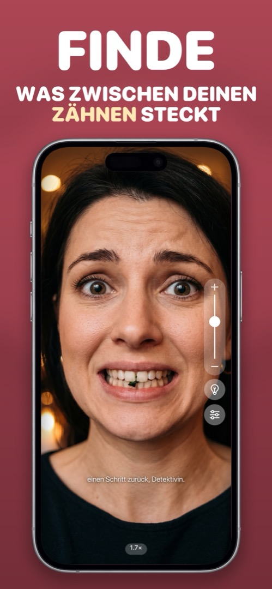

Wie du Essensreste in den Zähnen findest, wenn kein Spiegel in der Nähe ist
Spinat, Mohn, ein Körnchen schwarzer Pfeffer — sie verstecken sich genau da, wo du sie nicht spürst, und jeder, mit dem du in der nächsten Stunde sprichst, sieht sie. So prüfst du in Sekunden, wo auch immer du bist.
Die schnellen, unvollkommenen Tricks
- Mit der Zunge: Fest über die Vorderseite der oberen und unteren Zähne fahren. Erwischt das Grobe, verpasst alles, was flach am Zahnschmelz oder zwischen den Zähnen sitzt.
- Mit Wasser spülen: Ein kräftiger Schluck, gut geschwenkt, löst die meisten losen Reste. Ob es geklappt hat, weißt du nicht.
- Jemanden fragen: Zuverlässig — wenn du bereit bist, einer Kollegin die Zähne zu zeigen.
- Dunkler Handybildschirm: Die Spiegelung des Sperrbildschirms ist zu dunkel, um zwischen die Zähne zu sehen.
Die verlässliche Methode: Frontkamera, gezoomt, gut beleuchtet
Die Frontkamera deines iPhones bei 1,5–2× Vergrößerung, mit Licht auf dem Gesicht, zeigt mehr als ein Badspiegel — du siehst zwischen die Zähne und entlang des Zahnfleischrands. Die Kamera-App kann das auch, aber dann liegt ein Foto deiner zusammengebissenen Zähne in der Mediathek. Eine Spiegel-App schafft das, ohne etwas zu speichern.
Worauf du achten solltest
Breit lächeln, dann die Oberlippe hochziehen und die Unterlippe nach unten. Zwischen den vorderen sechs Zähnen prüfen, am Zahnfleischrand und in den Mundwinkeln (dort sammeln sich Lippenstift und Soße). Zehn Sekunden, fertig.
Vorbeugen fürs nächste Mal
Zahnseide-Sticks in Tasche oder Schreibtischschublade und Wasser zum Mittagessen. Blattgemüse, Körner und alles mit Kräutern sind die üblichen Verdächtigen.
So geht's in Mirrorly
In Mirrorly dauert der ganze Check etwa zehn Sekunden:
- Mirrorly öffnen — sofort ein Vollbild-Spiegel.
- Den Zoom-Regler auf etwa 2× ziehen (oder zusammenziehen).
- Bei schlechtem Licht auf die Glühbirne tippen, damit du zwischen die Zähne sehen kannst.
- Breit lächeln, oben und unten prüfen, Mundwinkel.
- App schließen. Nirgends existiert ein Foto deiner Zähne. (Rechne aber mit einem Kommentar des Spiegels — „einen Schritt zurück, Detektivin.“)

Mirrorly gibt es kostenlos zum Ausprobieren im App Store. Ein Vollbild-Spiegel fürs iPhone mit Ringlicht, Zoom und maximaler Helligkeit. Drei kostenlose Checks, danach ein einmaliger Kauf — kein Abo, keine gespeicherten Fotos, kein Konto, keine Werbung.